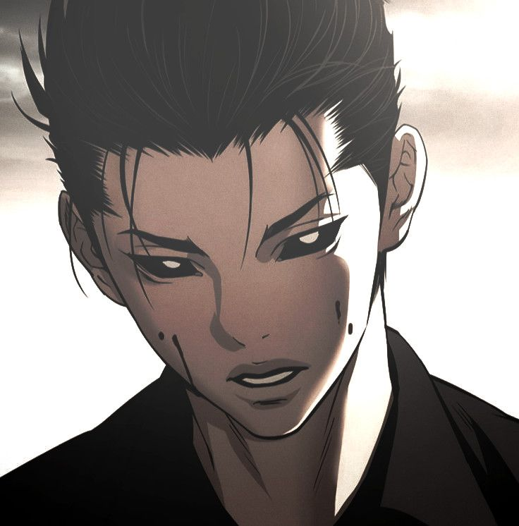
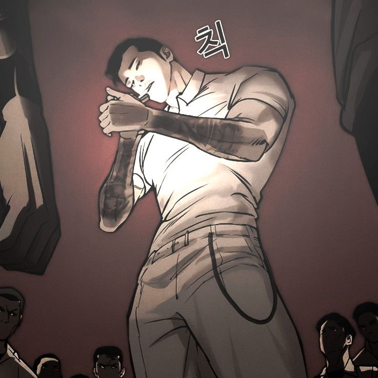

We are a Creative Design Agency

GUN
Gun Park is one of the most feared and respected characters in Lookism. He’s not just strong—he’s surgical. A top-tier fighter who trained legends like Daniel Park, Eli Jang, and Olly Wang. He’s cold, calculated, and loyal to Charles Choi, but his past hides something darker.

WHITE GHOST
White Ghost is a mysterious figure in Lookism, known for his ghostly appearance and unparalleled stealth. He operates in the shadows, gathering information and manipulating events from behind the scenes. His true motives remain unclear, but his influence is undeniable.